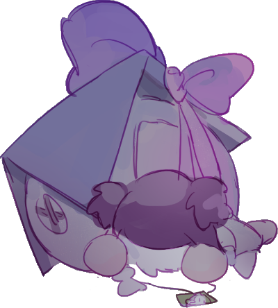

{kind=link}
{kind=link}
我一直都在焦虑,而且最近更加严重,往后也不好说能不能好转.
焦虑的原因反而归于单纯了.
我太担心自己糟蹋可能性了.生活一直在挣扎线,却只看着遥远的有些残忍的事物.
这能对我的生活有任何帮助吗,不会吧.
但是总会被吸引啊,没有办法的.
当人类很开心啊.
所以会不敢弄糟,忍受不住乏味,会贪心,会觉得自己没在活着.
最后被自己的感情给吞没去.
[GJ报告]
我来丢人了!!!
【游戏制作记录】
是参与global game jam 2019 winter,48小时限制游戏制作的活动记录.
游戏名字: HomePacker.
制作软件: unity和photoshop.

demo的时候已经丢足脸了,就让这个成为我美好的黑历史回忆吧(狗头.jpg
这次还是当我唠嗑,算是第一次参加这种活动,也是第一次做出了个算是可以玩的东西.所以记录一下^ ^.
game jam一个学期一次,上个学期就想参加了.上次想避开编码,用rpg maker做个简单些的.叫了三位朋友,咕了三位,立绘都没画完就连我都不得不回去赶作业(……).
大失败.
这次在去过hackathon(限时的编程活动)之后,说实话更有(心理准备上的)经验,算是平安的走完了全程.
game jam这次的主题是what does home mean to you.跟朋友探讨了几个idea,决定的是【将安全空间背在背上,的生存向游戏】.
因为是我做美术,所以主角就决定是幼女了(认真).
室友:去年你想做基佬恋爱,今年做幼女求生,你这个人就是靠这种来吸引我(摇头).
我:是啊,谁能拒绝幼女呢.
然后开始分配任务.
补给物品的随机生成——>室友
角色走动动画——>我
hp和san值条的设定
{kind=link}
{kind=link}
当然初期也设想了比如说剧情的演出,关卡设定,最高分设定等等.完全没来得及做.
我们队一开始就两个人,都没有unity经验.这个game jam是48小时计时.我画人物行走图,室友在翻教程.到时间过半的时候才开始创建unity文件,真的,我以为都要咕咕咕.
24小时的时候有选择性demo.其他的组有些已经有了很不错的原型,不过有听到他们有远程的协助者,于是demo结束后我直接给飞哥打了电话.
飞哥:周末好闲啊我们做app吗.
我:我们game jam要凉了,现在聘请你还来得及吗.
于是
hp和san值条的设定——>飞哥
好在unity能做到三个人同时编辑文件,我们这次没有用git.
(我怂,上次hackathon的时候我又双叒叕把git用错了,(用错是有可能导致对方丢失进度的),队友没有把我列进人生黑名单真是太感谢了.)
非常感谢后加入队的飞哥.我们是踩着最后的死线把半成品交上去的.如果没有飞哥,这个游戏真的是个幼女在末日世界开心不劳而获(?)的游戏了.
game jam比hackathon人性化很多.hackathon我们在学校lab就地打铺,只睡了两个小时(…).五点钟的时候绕学校走一圈,mc三楼的小沙发上躺着一个个盖着毯子像小丘一样的同学.这次好歹是睡了点的.
{kind=link}
{kind=link}
但有句说句.我的室友第二天又睡到失联,差点没赶上demo.
前24小时我边听完了百合露营()边在画+修正行走图.因为之前都是把绘图当做休闲,集中的赶图还是第一次.手到周一还疼(我太弱了!!!!!).美工成本比想象中的高很多.原来还计划着背景的作画,或者是前景和障碍物之类的.完全画不过来.

说实话这让我重新考虑想美工这件事().之前就觉得如果去做UI很耗时,而且会学不到太多编程.真想把一部分美术包给别人(.
后面的24小时就是翻教程将图导入进去了.
最后在测试平衡性的时候跟室友出了矛盾.
合作最大的好处是会省下巨大的时间.最大的麻烦的事情是【你以为你们在做同样的事,可是和对方脑内想象的不一样】.
对方设想的是快速的小游戏,低像素,主要占比是干脆简单的游戏机制,快节奏.
我是幼女占游戏主体很多,节奏会慢一些的,甚至会加入一些探索元素的游戏.
{kind=link}
{kind=link}
{kind=link}
飞哥:诶末日情节我们要不要把幼女做成变异人啊.
我:wwwwwwwwwww
我:我会画成魔法少女的哦?
说实话陷入这个情况很糟糕.特别是当时还有十来个小时要上交了.
也因为这个原因,这个游戏可能并不会继续下去(嘛毕竟也是一个周末的小游戏).
我会担心如果快节奏,我做的幼女设定(还准备加入和已经去世的狗狗的互动情节)会很不尊重生命.
这个问题也没等解决demo的时间就到了.
是的,是整个活动最期待的!膜拜大佬的时间了!
(也是记载这篇文章的目的 嗯)
游戏是个范围很广的词,有互动成分的都可以算是游戏不是吗.这个game jam桌游可是参加的.我们这个场地的大家也是各种各样的题材都有呢.
没有编程的朋友选择了自带了rpg元素的程序(用rpg maker的也有呢),还有做视觉小说的.
场地是在阶梯教室里进行的,我有偷偷看到那组视觉小说的朋友,画风很稳定(同样是美工,感受到了羞愧),背景用的是素材,整体的完成度很高呢.
用rpg maker的组做的剧情向的游戏,是猫猫出门冒险的主题,像素地图做的真的美…如果能全部完成的话还是很精致的.
game jam是每组人数不定的.最强的两组有一组是大佬solo,还有一组是六位大佬(+远程音乐人),真的很酷.
有些大佬是将台式电脑带到了会场,又加上笔记本双开,气势上就知道是个狠角色xx.
那位solo的佬就是台式大佬,用unreal做的3D跑酷向游戏.抓钩跳过障碍.大佬在半场demo的时候就把游戏雏形做出来了,这也太快了吧!
小组成员六位的做了个四人联机捉迷藏游戏…一个人当鬼(鲨鱼),其他三个人当鱼(被捉的人).如果在鲨鱼追到前三人团聚的话就是鱼赢,鲨鱼团灭了对方就是鲨鱼赢.
solo佬毕竟是solo,素材用的是默认材料.这组朋友自己做的3D模.
各位还记得那个【吃我咸鱼突刺.jpg】的表情包吗,给鱼的模型做了双手双脚,像那个表情包一样的魔性.鲨鱼则是加上了兄贵肌肉手,前进的方式是将划桨一样的前进,有毒吧!!
3D的魅力真的很大!
还有很厉害的组做了online联机游戏,3D探索向游戏,都是非常技术向的组!!果然是有趣的人而且拥有着很厉害的技术,所以能把那份有趣好好的展现出来呢55555.
demo的时候.
我:讲真要不我们就别上去了.
室友:来都来了,对吧.
最后的总结.
上次hackathon我是做UI设计,就是排版那种感觉吧.所以我们做的app还算是视觉上ok.这次直接跳到画小人了.真的很不应该,应该好好回去思考一下先把整体的视觉敲定,跟组员好好沟通.认真滴计算时间,完成是第一步的.游戏的机制是最重要的.美术很耗时但是美术是辅助品.重点不能再搞错了.
动画比我想象的难画很多,但是2D动起来的时候我还挺喜欢的.可能还会再思考思考.
嘛,也真的不是在逃避3D啦…相信我.
下次还想再参加呢!